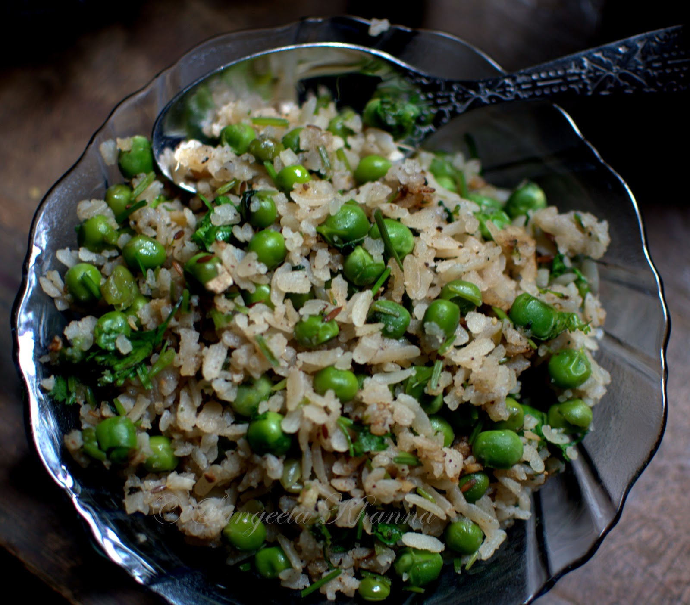

Banarasi Chooda Matar (Chura Matar)
The most famous winter breakfast of Uttar Pradesh created in the holy city of Varanasi is chooda matar. Also known as chura matar or chiwda matar, this Banaras original is prepared from flattened rice, fresh green peas, milk, garam masala and loads of desi ghee. This flavoursome comfort food is the ideal winter treat served in almost all the shops in the narrow lanes of Old Banaras. Locals highly recommend the chooda matar of Keshari Deenanath Chaat Bhandar in Chowk that is also renowned for its gulab jamuns, palak chaat, tamatar ki chaat, palak pakodas, aloo tikki and jalebi. The flattened rice is rinsed well and soaked in milk and cream for a few minutes. The vendors here prefer to use the flattened rice from the fresh crop of paddy as it is tastier and mixes well with the ingredients. A dollop (or a little more) of desi ghee is heated in a kadai to which cumin seeds, finely chopped ginger and green chillies are added. A generous spoon of garam masala is added to this, after which fresh peas, sugar, salt and coriander stems are added. The mixture is stirred gently. Half a cup of water is added and the peas are left to cook in the masala on medium flame. Once the peas are soft, the soaked chiwda is added, mixed well and cooked till it begins to look nice and fluffy. Freshly chopped coriander leaves and lime juice is added to the chiwda. It is garnished with dried fruits like raisins and fried cashews. The final dish is served in a kulhad and presents a very pretty picture with shiny green peas, fluffy rice flakes, coriander leaves and sometimes, namak pare.
